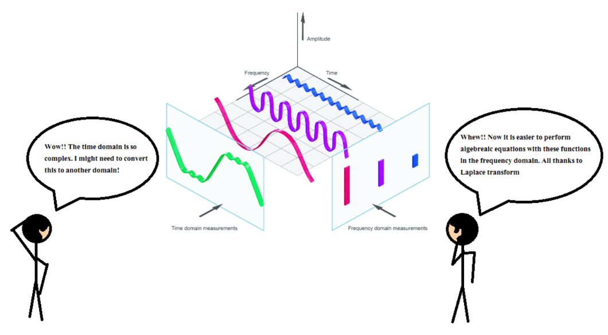

Laplace Transformations for mixed mth order differential and nth order integral equations
Background :
Laplace transformations are a powerful mathematical tool used to simplify the process of solving linear differential equations, particularly in engineering and physics. By converting differential equations from the time domain into the complex frequency domain (also called the s-domain), the Laplace transform changes derivatives into algebraic expressions, making the equations easier to solve. Once the solution is found in the frequency domain, the inverse Laplace transform is used to convert it back to the time domain. This method is especially useful for handling initial conditions and solving systems with step inputs, making it an essential technique in fields like control theory, circuit analysis, and mechanical systems modeling. Through the use of Laplace transformations, complex dynamic systems are transformed into more manageable algebraic forms.
Code :
The code was written in a Jupyter notebook. The output pdf can be found here
Applications :
Solving mixed m-th order differential and n-th order integral equations by converting them into linear equations has wide-ranging applications in various scientific and engineering disciplines. These equations frequently arise in areas like fluid dynamics, control theory, signal processing, and electrostatics, where systems involve both dynamic (differential) and cumulative (integral) behaviors. By transforming these complex equations into linear forms, either through techniques like the Laplace transform or other linearization methods, engineers and scientists can analyze the behavior of systems more efficiently. This conversion simplifies the handling of boundary conditions, facilitates numerical methods for solving complex systems, and allows for the integration of differential and integral components in a unified framework. For instance, in electrical circuit analysis, mixed differential-integral equations are used to model the interplay between capacitors, inductors, and resistors, where converting them to linear equations enables easier solution and system optimization.